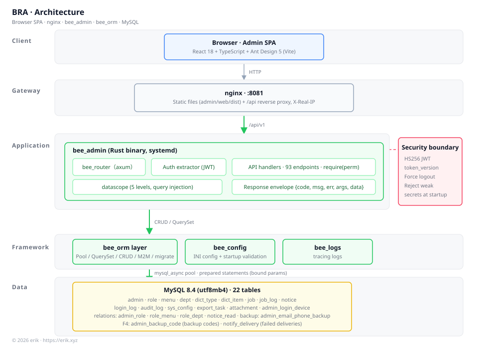
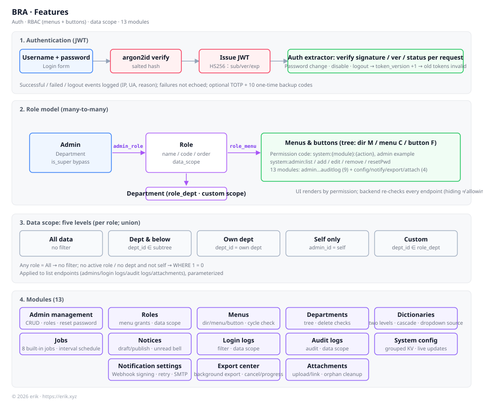
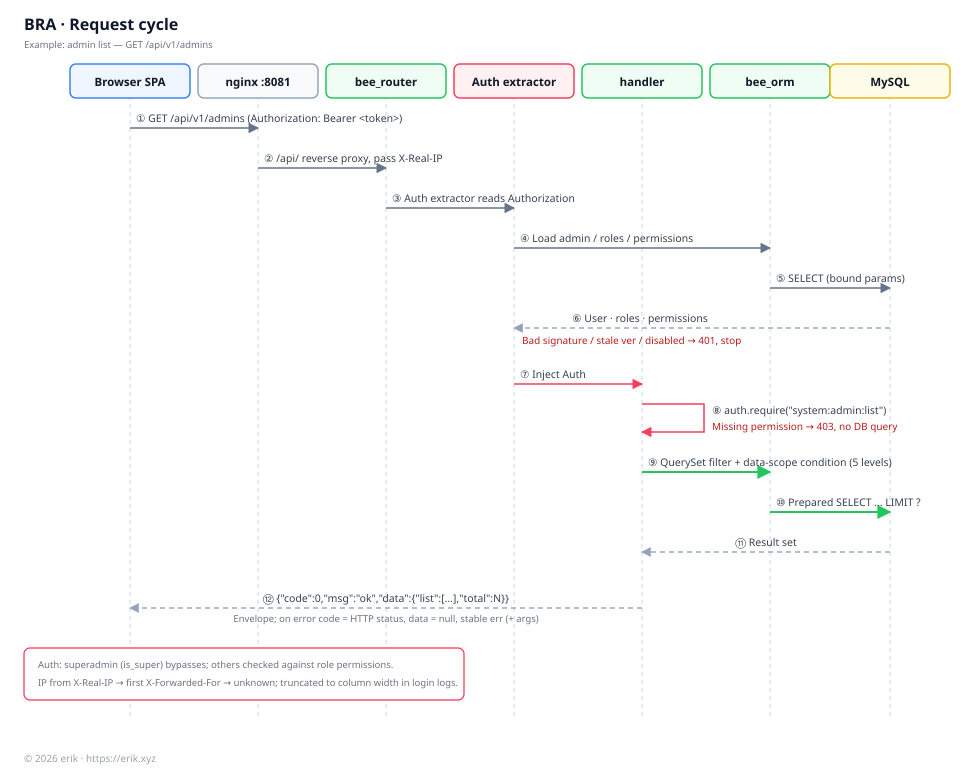
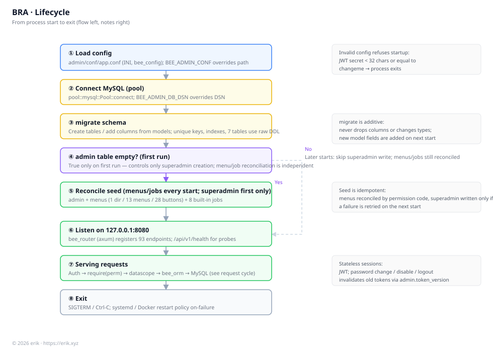

Menu + button permissions
Admin ← roles ← menus and buttons; superadmins bypass codes. The UI hides, the backend checks every request.
admin_rolerole_menurequire()Rust · RBAC · Ready to run
BRA (Bee Rust Admin) is an out-of-the-box admin system: Rust backend + React 18 + Ant Design 5. Permissions down to buttons, five data-scope levels, and a complete audit trail.
Tables and seed data are created on startup — no manual SQL migrations.

Overview
It solves practical problems: permissions down to individual buttons, data limited to a visible scope, and a trace of every login and operation. Hiding a button in the UI is only UX; the backend re-checks every endpoint. List queries inject scope conditions in the data layer with bound parameters — never by concatenating user input.
The backend uses this repo’s bee-rust framework (axum routing + a custom ORM execution layer + INI config); the frontend is a Vite + React 18 + Ant Design 5 SPA. They share one {code, msg, data} contract.
Startup creates tables and seeds: superadmin, menu permission tree and eight built-in jobs. Upgrades only add columns — never drop or retype them.
Roles hold permission codes such as system:admin:resetPwd; the UI renders menus, the backend checks every endpoint.
All / department and below / own department / self only / custom. Multiple roles are unioned; no active role means no data at all.
JWT carries token_version: password changes, disabling and logout invalidate old tokens without a blacklist.
Successful, failed and logout events plus every side-effecting operation are stored; four entity types also record field-level change summaries.
Features
From the front gate to the ledger, from data channels to notification exits. Every module carries its own permission codes and audit path.
Admin ← roles ← menus and buttons; superadmins bypass codes. The UI hides, the backend checks every request.
admin_rolerole_menurequire()List queries inject department subtrees, self-only or custom departments; multiple roles are unioned and parameters are always bound.
datascoperole_deptJWT carries a version; password changes, disabling and logout invalidate old tokens. Sign out other devices in one click.
token_versionjwt-rustLogin records, audit logs and change summaries; 32 attack-signature detectors, report-only by default, block mode available.
login_logaudit_logsecurity-rustThe code field appears only after the password is accepted; 10 one-time backup codes stored as hashes; encrypted secret; device list can kick one device.
RFC 6238AES-256-GCMbackup_codeEight code-registered jobs: backup, attachment cleanup, notification retry, export execution; interval scheduling and manual runs.
jobjob_logdb_backupCSV import is all-or-nothing; the export center runs asynchronously with generation names; chunked uploads, dedup and orphan cleanup.
importexportattachEvent notifications with HMAC-SHA256 signatures; failed deliveries are retried and recorded; private addresses are blocked at send time; redirects are not followed.
notice.publishedaccount.lockedSMTPChinese and English copy with error-code lookup; login page and footer read public config for subtitle, copyright and repository link.
i18nconfigs/publicArchitecture
Browser → nginx → bee_router → Auth extractor → handler → bee_orm → MySQL. 401 and 403 short-circuit before the database.

Client SPA · nginx :8081 · bee_admin · bee_orm / bee_config / bee_logs · MySQL 8.4 (22 tables).

Three-part permission model: admin ← admin_role → role ← role_menu → menus and buttons; role ← role_dept → departments for custom scopes.

A 12-step path for GET /api/v1/admins; signature, version and account status are checked before roles and permission codes load.

Config validation → MySQL → migrate::sync adds tables/columns → idempotent seed → listen on 127.0.0.1:8080 → SIGTERM exit.
Timeline
A continuous run of iterations in October 2026: guard the door, add data channels, then finish the engineering.
Complete RBAC admin, bee_orm execution layer, React SPA and deployment artifacts; create the database and go.
Audit logs, export, profile, login lockout, dark theme; configuration stops lying.
Login rate limiting, data scope on write paths, anti-self-escalation, 693 kB first-paint reduction, no more white screens.
Dictionaries, scheduled jobs, notices, and a complete Chinese/English UI.
bee-rust 1.2.3 and a new ORM implementation; the HTTP contract is unchanged.
Snowflake IDs + hashids, jwt-rust, encrypted columns, login captcha, chunked avatars, request scanning and an API docs site.
Dashboard, system config, backup/import/export, TOTP and login devices, notification channels, attachments and module scaffolding.
500-line split, versioned API directory, TOTP backup codes, Webhook signing and retry, hardening, and the project static site.
Single-host Compose (separate services, local secrets with regeneration/backups, external data/logs, optional TLS), stale-write/authorization fixes, import/export and log performance.
Project pet · Keeper
The hive’s guard: checks credentials, issues keys, logs visitors. Five states follow the project state; twelve expressions follow your clicks.
On duty(⌐■_■)Gate is normal; permissions and menu tree agree
Verifying(・_・)?Changes pending review; credentials, please
Superuser(＾▽＾)Superadmin on site, bypassing all permission codes
Dozing(-_-)zZLate night, no visitors
Stinger(#°益°)A secret file was found in the repository
Current form: Smile
Click a thumbnail to zoom; click its name to change the form. Each SVG includes its own expression, mood effects and animation, and respects prefers-reduced-motion.
Quick start
Prebuilt artifacts need glibc ≥ 2.38; older machines use a source build or Docker. The script checks before writing anything and prints alternatives.
git clone --depth 1 https://github.com/erikwang2013/bee-rust-admin.git[db] dsn, [jwt] secret and [app] encrypt_key (the last one cannot be changed).cargo run -p bee_admin, then cd admin/web && pnpm i && pnpm dev.The script downloads or builds, generates config, creates the database, installs systemd + nginx, and runs a self-check.
# interactive; --help lists all options
git clone --depth 1 \
https://github.com/erikwang2013/bee-rust-admin.git
cd bee-rust-admin
less install.sh && bash install.sh
Older machines: bash install.sh --mode build; containers: ./compose-up.sh --build.
Support the project
If BRA saved you time, a voluntary tip is welcome. Click a QR code to enlarge it.
Tips are entirely voluntary and do not affect the license or features.